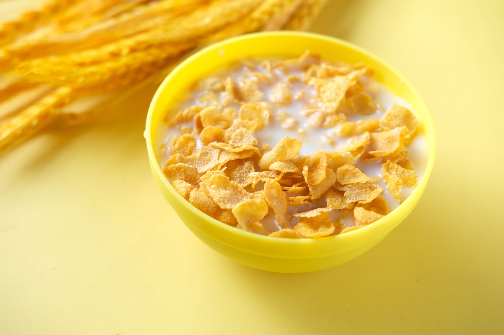
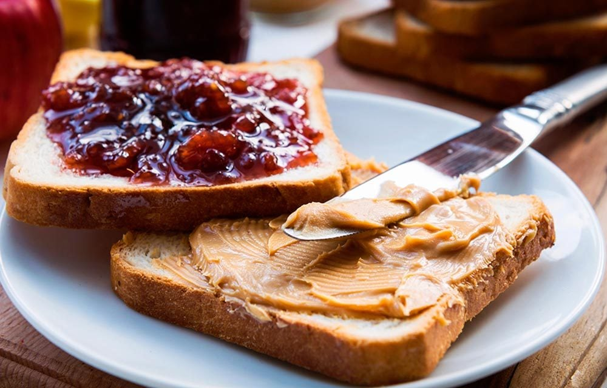
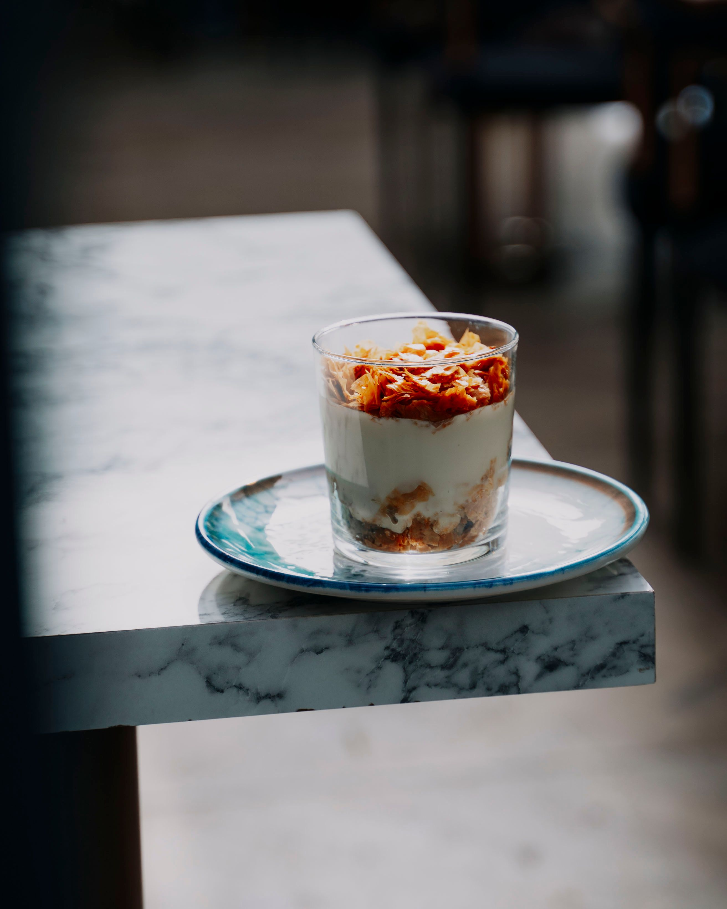

Bonjour!
Hello Again!
You've reached the simple recipes page. Below you'll find a few simple recipes that even a child can make, Enjoy!
Breakfast Cereal

Description
Cereal, formally termed breakfast cereal, is a traditional breakfast food made from processed cereal grains. It is traditionally eaten as part of breakfast, or a snack food, primarily in Western societies.
Ingredients
- Milk
- Cereal of your choosing
Instructions
- Pour cereal into an empty bowl. (Very important to do this first)
- Add milk to the bowl (Don't drown the cereal in milk.)
- Grab a spoon and enjoy!
Peanut Butter & Jelly

Description
A peanut butter and jelly sandwich consists of peanut butter and fruit preserves—jelly—spread on bread. The sandwich may be open-faced, made of a single slice of bread folded over, or made between two slices of bread.
Ingredients
- Bread (of your choice)
- Peanut Butter
- Jelly
Instructions
- Grab one slice of bread and spread a thin layer of peanut butter on the bread.
- Grab the other slice of bread and spread a thin layer of jelly on the bread.
- Put both slices of bread together (with the peanut butter and jelly facing each other).
- Enjoy!
Yogurt Parfait

Description
Yogurt mixed with fruit, granola and/or nuts.
Ingredients
- Yogurt
- Fruit
- Granola
- Nuts (optional)
Instructions
- Add yogurt to a bowl
- Add fruit to the bowl
- Add granola (and nuts if you want)
- Grab a spoon and mix the ingredients together.
- Enjoy!